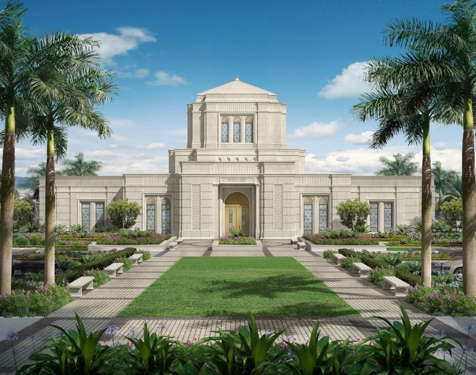
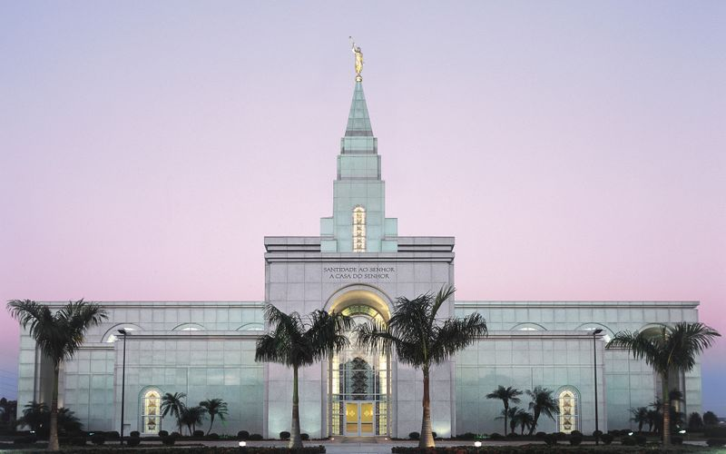
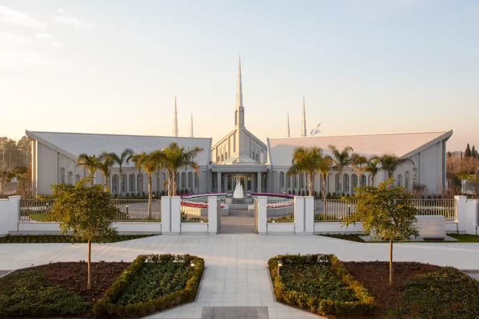
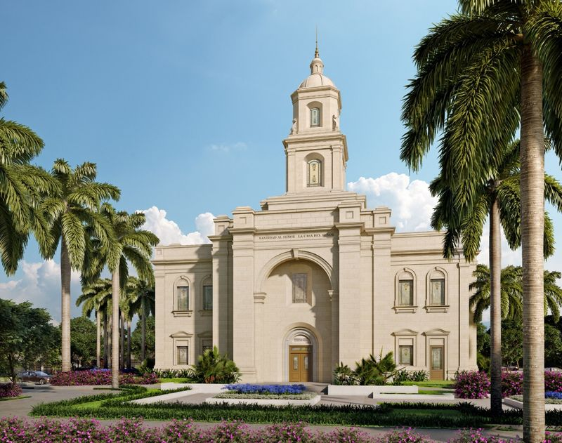
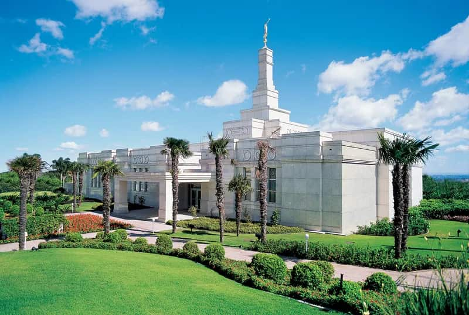

Álbum do Templo
Página Inicial
Antigo
Novo
Grande
Pequeno
Página Inicial
Templo de Fortaleza

Templo de Belo Horizonte

Templo de Campinas

Templo de Buenos Aires

Templo de Guatemala

Templo de Porto Alegre
Templo de Recife
Templo de Provo
Templo de Salt Lake